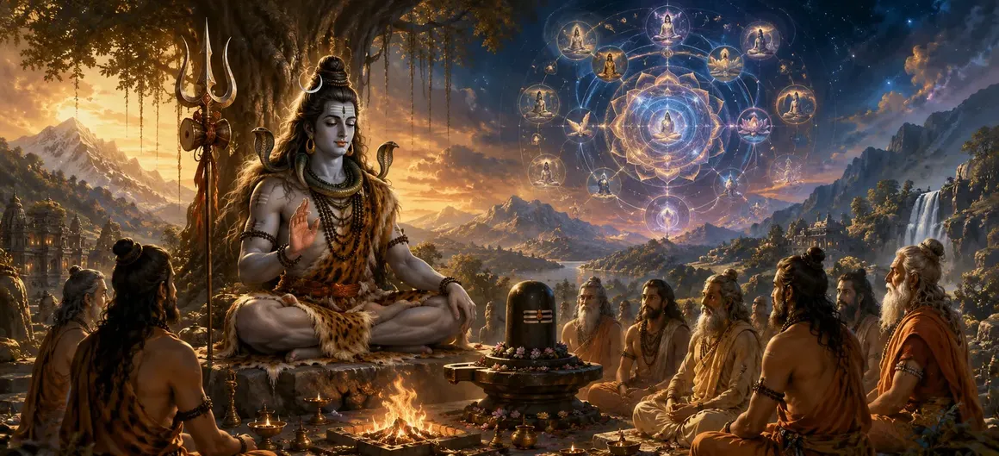

शैव शिक्षण के सिद्धांत - भाग 1
वायवीय संहिता का पाँचवाँ अध्याय भगवान वायु द्वारा गहन दार्शनिक निर्देश की शुरुआत का प्रतीक है।
इस पहले भाग में, भगवान शिव की सर्वोच्च प्रकृति, ब्रह्मांडीय अभिव्यक्ति और आत्मा की आध्यात्मिक पहचान के बारे में मूलभूत सिद्धांतों को व्यवस्थित रूप से उजागर किया गया है।
साधकों को मूल आध्यात्मिक सत्यों से परिचित कराया जाता है जो शैव धर्मशास्त्र का आधार हैं।
अध्याय 5 की मुख्य बातें
परम निरपेक्ष
भगवान शिव को सभी गुणों से परे सर्वोच्च, निराकार वास्तविकता के रूप में समझाता है।
ब्रह्मांडीय उत्सर्जन
विवरण कि कैसे ब्रह्माण्ड शिव की दिव्य इच्छा से उत्पन्न हुआ।
आत्मा एवं चेतना
व्यक्तिगत चेतना और शिव के बीच आंतरिक संबंध को स्पष्ट करता है।
व्यवस्थित सिद्धांत
आध्यात्मिक जिज्ञासुओं के लिए ध्यान करने के लिए स्पष्ट शास्त्रीय सिद्धांत प्रस्तुत करता है।
भ्रम दूर करना
उच्च ज्ञान के माध्यम से सांसारिक भ्रम पर काबू पाने का मार्ग उजागर करता है।
भाग 2 का प्रवेश द्वार
शिक्षाओं के भाग 2 में सीधे ले जाने वाली मूलभूत रूपरेखा तय करता है।
इस अध्याय में मुख्य विषय
भगवान शिव की सर्वोच्च प्रकृति
भगवान वायु ने यह स्पष्ट करते हुए शुरुआत की कि भगवान शिव परम, स्वयं-प्रकाशमान वास्तविकता हैं, जो जन्म, क्षय और मृत्यु से रहित हैं।
वह एक साथ पारलौकिक (निराकार निरपेक्ष) और अन्तर्यामी (सभी नामों और रूपों में प्रकट) है।
शिव और शक्ति की अभिन्नता
प्रवचन इस बात पर प्रकाश डालता है कि शिव और शक्ति अग्नि और उसकी ज्वलनशील शक्ति की तरह सदैव एकजुट हैं।
शुद्ध चेतना (शिव) और मौलिक ऊर्जा (शक्ति) के सामंजस्यपूर्ण परस्पर क्रिया के बिना कुछ भी नहीं बनाया या कायम रखा जा सकता है।
ब्रह्मांडीय अभिव्यक्ति की प्रक्रिया
अध्याय में बताया गया है कि कैसे ब्रह्मांड सूक्ष्म ऊर्जावान अवस्थाओं से दैवीय इच्छा के माध्यम से स्थूल भौतिक क्षेत्रों में विकसित होता है।
यह उद्गम शिव से पृथक नहीं है; बल्कि, यह उनकी अनंत महिमा और शक्ति का एक चंचल प्रक्षेपण है।
जीव का सच्चा स्वरूप
भगवान वायु बताते हैं कि व्यक्तिगत आत्मा (जीव) अनिवार्य रूप से दिव्य प्रकृति की है, जो सर्वोच्च चेतना के प्रकाश को प्रतिबिंबित करती है।
सांसारिक माया के कारण आत्मा अपनी दिव्य विरासत को भूल जाती है और भौतिक अस्तित्व में उलझ जाती है।
अज्ञान के कारण बंधन
अज्ञान (अविद्या) आत्मा की वास्तविक पहचान को छिपाने वाले पर्दे के रूप में कार्य करता है, जिससे सीमा और पीड़ा की भावना पैदा होती है।
शिक्षाएँ इस बात पर जोर देती हैं कि अज्ञानता के इस पर्दे को हटाने के लिए आध्यात्मिक अभ्यास और कृपा आवश्यक है।
भाग 2 में परिवर्तन
शिव, शक्ति और जीव के मूलभूत तत्वमीमांसा को स्थापित करने के बाद, यह अध्याय अगले चरण के लिए आधार तैयार करता है।
यह निर्बाध परिवर्तन सीधे अध्याय 6, 'शैव शिक्षण के सिद्धांत - भाग 2' की ओर ले जाता है।
अध्याय 5 की मुख्य शिक्षाएँ
शिव पूर्ण रूप में
भगवान शिव समस्त अस्तित्व का अंतिम आधार और स्रोत हैं।
अविभाज्य शक्ति
चेतना और ऊर्जा एक एकीकृत दिव्य वास्तविकता के रूप में कार्य करते हैं।
दिव्य पहचान
आत्मा परम शिव के समान शुद्ध चेतना साझा करती है।
बंधन की जड़
अपने वास्तविक स्वरूप का अज्ञान सांसारिक उलझन पैदा करता है।
बुद्धि की आवश्यकता
भ्रम के चक्र को तोड़ने के लिए विवेकपूर्ण ज्ञान आवश्यक है।
भाग 2 का प्रवेश द्वार
निम्नलिखित अध्याय में प्रस्तुत उन्नत सिद्धांतों के लिए साधकों को तैयार करता है।
आध्यात्मिक चिंतन
यह समझना कि हमारा सच्चा आत्म सर्वोच्च चेतना का प्रतिबिंब है, हमें सांसारिक चिंताओं से परे जाने में मदद करता है। जब हम समस्त सृष्टि के भीतर शिव और शक्ति को पहचान लेते हैं, तो हर पल पूजा का कार्य बन जाता है।
अध्याय 5 का संदेश जीना
केवल भौतिक शरीर के साथ तादात्म्य स्थापित करने के बजाय प्रतिदिन अपनी दिव्य आध्यात्मिक विरासत पर चिंतन करें।
अपने दैनिक कार्यों और विचारों में चेतना और ऊर्जा के बीच एकता के बारे में जागरूकता पैदा करें।
पवित्र ज्ञान का अध्ययन और आंतरिक चिंतन का अभ्यास करके अज्ञानता को दूर करने का प्रयास करें।
प्रमुख आध्यात्मिक अवधारणाएँ
भगवान शिव का सर्वोच्च, निराकार स्वरूप।
शिव और शक्ति का शाश्वत सामंजस्य और एकता।
व्यक्तिगत आत्मा की परमात्मा के साथ मौलिक एकता।
आध्यात्मिक अज्ञान और भ्रम से उत्पन्न बंधन.
मौलिक दार्शनिक ज्ञान का जगमगाता दीपक।
स्वयं के वास्तविक स्वरूप पर चिंतन।
अध्याय सारांश
वायवीय संहिता अध्याय 5 शैव शिक्षण के सिद्धांतों को प्रस्तुत करता है - भाग 1। भगवान शिव की सर्वोच्च प्रकृति, शिव और शक्ति की अविभाज्यता, ब्रह्मांडीय उत्पत्ति और अज्ञान से ढके जीव की वास्तविक पहचान का विवरण देते हुए, यह अध्याय मुख्य दार्शनिक सिद्धांतों को स्थापित करता है। यह अध्याय 6, 'शैव शिक्षण के सिद्धांत - भाग 2' के लिए प्रत्यक्ष आधार के रूप में कार्य करता है, जो शिव पुराण में शैव धर्मशास्त्र की गहन खोज को जारी रखता है।
अक्सर पूछे जाने वाले प्रश्न
1. वायवीय संहिता अध्याय 5 का मुख्य विषय क्या है?
अध्याय 5 शैव शिक्षण के मूलभूत सिद्धांतों (भाग 1) को प्रस्तुत करता है, जो भगवान शिव के मूल आध्यात्मिक सिद्धांतों और सत्यों को उजागर करता है।
2. अध्याय 5 में ये मूलभूत शिक्षाएँ कौन देता है?
भगवान वायु नैमिषा वन में ऋषियों की सभा को ये गहन उपदेश देते हैं।
3. भाग 1 में कौन से मूल दार्शनिक विषय शामिल हैं?
भाग 1 में भगवान शिव की परम प्रकृति, सृष्टि की उत्पत्ति, सर्वोच्च चेतना और व्यक्तिगत आत्मा के बीच संबंध और भक्ति के महत्व को शामिल किया गया है।
4. शैव दर्शन भगवान शिव को किस प्रकार देखता है?
भगवान शिव को सर्वोच्च, निराकार पूर्ण (परा ब्रह्म) के साथ-साथ ब्रह्मांड के अंतर्निहित निर्माता, पालनकर्ता और विसर्जक के रूप में देखा जाता है।
5. इन सिद्धांतों का अध्ययन करने से साधकों को क्या आध्यात्मिक लाभ मिलता है?
साधकों को स्पष्ट विवेकशील ज्ञान प्राप्त होता है, भ्रम दूर होता है और आध्यात्मिक मुक्ति के प्रति उनका समर्पण मजबूत होता है।
6. अध्याय 5 के बाद नेविगेशन के लिए अगला अध्याय कौन सा है?
नेविगेशन के लिए अगला अध्याय अध्याय 6 है, जिसका शीर्षक 'शैव शिक्षण के सिद्धांत - भाग 2' है।
"जब साधक आत्मा को परम शिव की अविभाज्य किरण के रूप में पहचानता है, तो भ्रम की जंजीरें शाश्वत प्रकाश में विलीन हो जाती हैं।"
वायवीय संहिता के माध्यम से जारी रखें
अध्याय 5 शैव शिक्षण के सिद्धांतों का विवरण - भाग 1। अध्याय 6, शैव शिक्षण के सिद्धांत - भाग 2 तक जारी रखें।